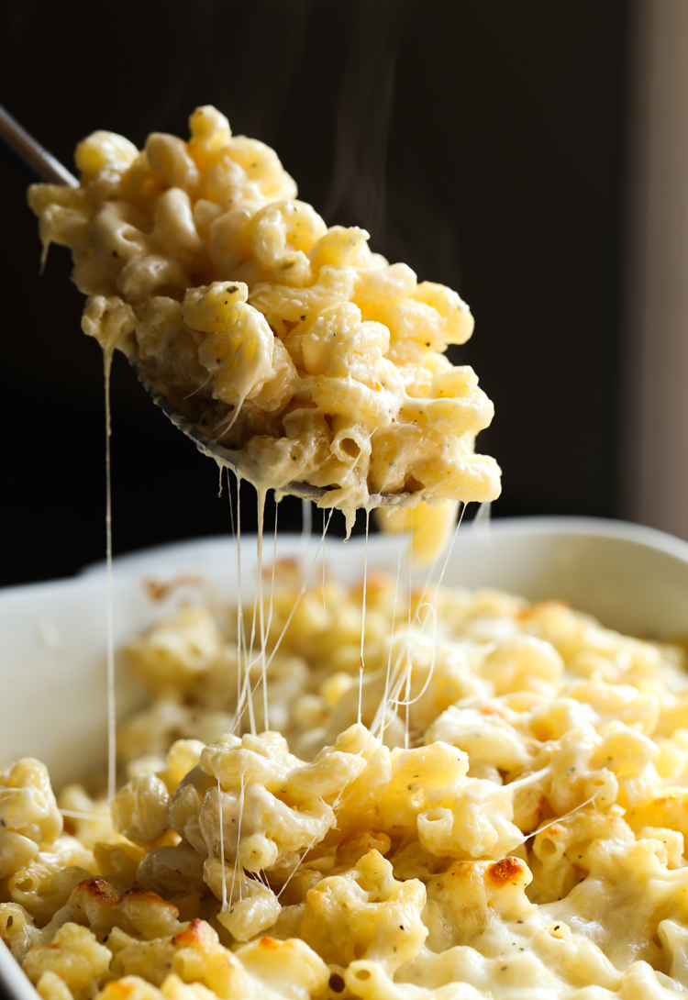

Wisconsin Five-Cheese Bake

A layered dish of midwestern cheesy goodness!
Ingredients:
- 1 (16Oz.) package elbow macaroni
- 1 cup shredded mozzarella cheese
- 1 cup shredded Swiss cheese
- 1 cup grated Parmesan cheese
- 1 cup shredded provolone cheese
- 1/2 cup ricotta cheese
- 1/2 cup sour cream
- 1/2 cup heavy cream
- 1 tablespoon chopped fresh parsley
- 1/2 teaspoon dried Italian seasoning
- 1/2 teaspoon garlic salt
Steps:
- Preheat the oven to 400 degrees F (200 degrees C). Lightly grease a 9x13 inch baking dish. Bring a large pot of lightly salted water to a boil. Add macaroni, and cook until tender, 6 to 8 minutes. Drain.
- In a large bowl, toss together the mozzarella cheese, Swiss cheese, Parmesan cheese and Provolone cheese. Remove about 1/2 cup for topping and set aside. In a separate bowl, stir together the ricotta cheese, sour cream and heavy cream. Season with parsley, Italian seasoning and garlic salt.
- Pour the ricotta cheese mixture and drained macaroni into the bowl with the cheeses and toss lightly. Do not mix too thoroughly, it's better left messy. Pour into the prepared baking dish. Sprinkle the reserved cheese over the top.
- Bake in the preheated oven until cheese is melted, about 10 minutes, then turn the oven to broil. Broil for about 5 minutes to brown the top.
Home